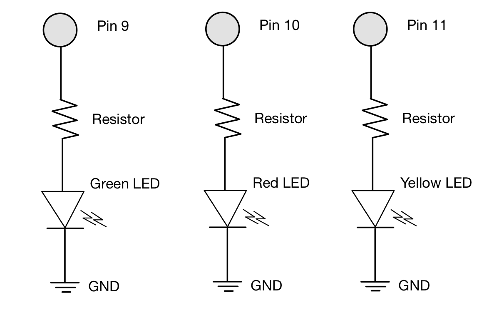
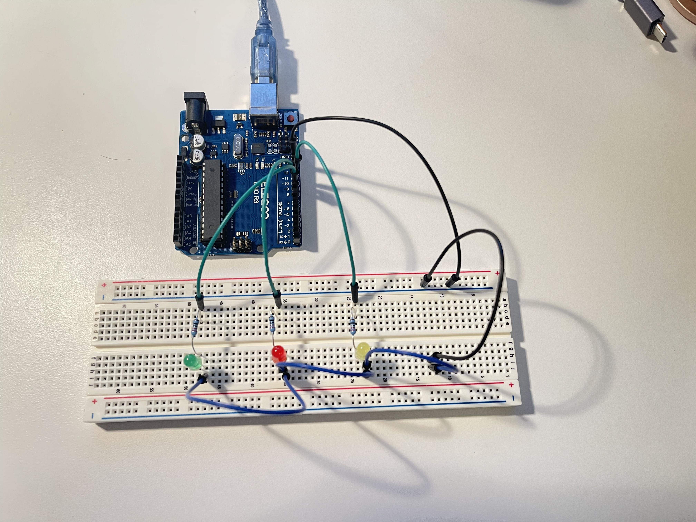
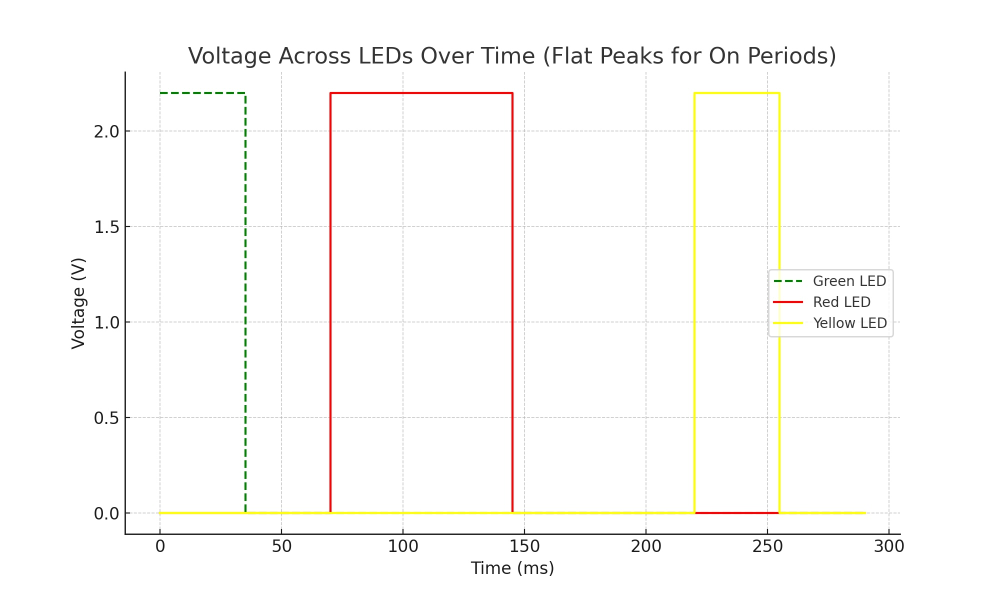

This project explores how to create a blinking LED circuit controlled by an Arduino. The goal was to design a schematic, assemble the circuit on a breadboard, and write code to create a dynamic blinking pattern for three LEDs.
Hardware
The hardware setup includes three LEDs connected to Arduino pins 9, 10, and 11 through resistors to control current flow. The resistor value was calculated to ensure the LEDs operate safely and efficiently.
Resistor Calculation
- Arduino Output Voltage: 5V
- LED Voltage Drop: 1.8V
- Voltage = V(arduino) - V(LED) -> 5 - 1.8 = 3.2V
- Desired Current (I): 20mA = 0.02A
- Resistance (Ohm's Law): R = V / I = 3.2V / 0.02A = 160Ω
- Chosen Resistor: 220Ω (rounded to a standard value for safety)
Schematic
Circuit
Arduino Code
This code controls three LEDs (green, red, yellow) connected to Arduino pins 9, 10, and 11.
// Label LED pins
int green = 9; // Pin for green LED
int red = 10; // Pin for red LED
int yellow = 11; // Pin for yellow LED
// The setup function runs once when you press reset or power the board
void setup() {
// Set all LED pins as OUTPUT
pinMode(green, OUTPUT); // Set green LED as OUTPUT
pinMode(red, OUTPUT); // Set red LED as OUTPUT
pinMode(yellow, OUTPUT); // Set yellow LED as OUTPUT
}
// The loop function runs over and over again forever
void loop() {
// Turn green LED ON and OFF
digitalWrite(green, HIGH); // Turn green LED on
delay(35); // Wait 35 ms
digitalWrite(green, LOW); // Turn green LED off
delay(35); // Wait 35 ms
// Turn red LED ON and OFF
digitalWrite(red, HIGH); // Turn red LED on
delay(75); // Wait 75 ms
digitalWrite(red, LOW); // Turn red LED off
delay(75); // Wait 75 ms
// Turn yellow LED ON and OFF
digitalWrite(yellow, HIGH); // Turn yellow LED on
delay(35); // Wait 35 ms
digitalWrite(yellow, LOW); // Turn yellow LED off
delay(35); // Wait 35 ms
}
Final Product!
The GIF shows the LEDs blinking in a cascading sequence. Each LED blinks independently with unique timing to create a dynamic visual effect.

Questions and Answers
1. Voltage Graph
The voltage across each LED alternates between 0V (off) and 2.2V (on) during the blinking sequence. Below is a graph showing the timing for all three LEDs.
2. How many LEDs could blink with only one on at a time?
If only one LED is on at any given time, the current limit of 200mA no longer applies since each LED would only draw 20mA sequentially. In this scenario, the Arduino could theoretically control all 14 digital pins, blinking up to:
- 14 LEDs
3. How fast do you need to blink your LEDs until you can no longer tell they are blinking?
When I tested the LEDs, my eyes perceived them as continuously lit when they blinked with a cycle of **4ms ON and 4ms OFF**
In practice, I achieved this by setting the delay in the code to **4ms for ON** and **4ms for OFF**:
digitalWrite(LED_PIN, HIGH); // Turn LED on
delay(4); // Wait 4ms
digitalWrite(LED_PIN, LOW); // Turn LED off
delay(4); // Wait 4ms
During my tests, this configuration worked well to make the LEDs appear continuously lit, even though they were still blinking rapidly. This threshold may vary slightly based on lighting conditions or individual perception, but 4ms provided a reliable result.